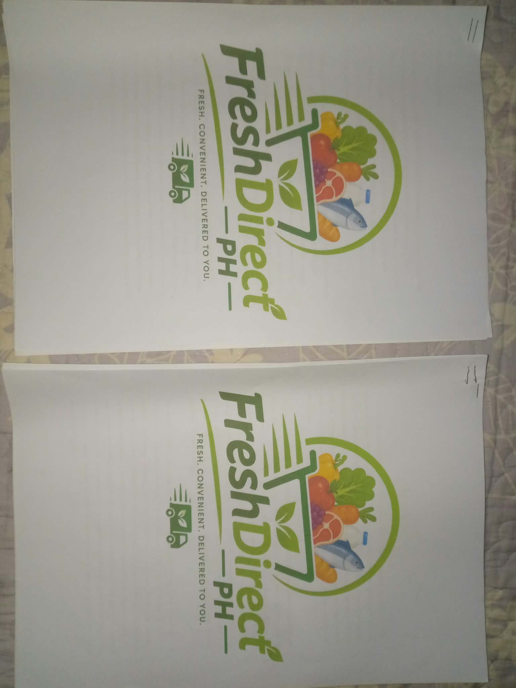

01
Business
Business Plan
a business that aims to provide fresh fruits, vegetables, seafood, and other essential food products directly to customers. It focuses on offering fresh, high-quality products at reasonable prices while making grocery shopping more convenient and accessible. Through its delivery service, customers can save time and effort by receiving their groceries at their doorstep. FreshDirect PH also promotes healthy eating by providing fresh and nutritious food for families and individuals. Its goal is to deliver freshness, convenience, and customer satisfaction through reliable service and quality products.